Comienzo del Proyecto
El primer paso fue crear un Mapa funcional y la Movilidad del jugador. En este punto se habían creado ya muchas clases que simplemente existían para que otras heredasen de ellas.
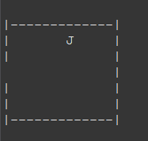
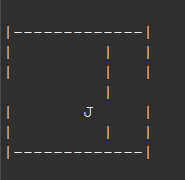
Nuevas Entidades
Implementados Enemigos (X) y NPC's (P). Con el sistema de movimiento terminado había que incorporar al proyecto algo con lo que interactuar en el mapa, aunque en este punto solo se mostraban.
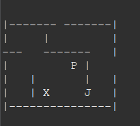
Implementando Funcionalidades
Ya habiendo introducido nuevas entidades en el juego, había que darles funcionalidad. Aquí se tuvo que ajustar el funcionamiento del bucle principal del juego para que detectase a los enemigos al colisionar y así dar inicio a la batalla; a los NPC se les dio un diálogo al interactuar con ellos.
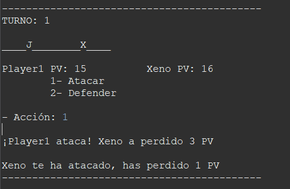
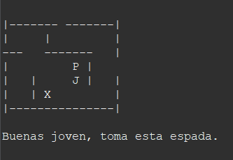
Gestor de Mapas y Lectura
Teniendo entidades funcionales y movimiento, un solo mapa se hacía pequeño. ¿Por qué no hacer más?
Rediseño completo de la carga e inicio del juego con la nueva clase gestor de mapas que permite que haya tantos mapas como se desee. Nuevo sistema de lectura de ficheros para la información básica sobre el programa; ahora se pueden introducir todas las entidades deseadas solo con definirlas en un .txt al igual que los mapas.
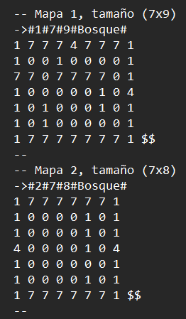
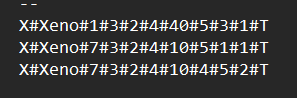
Menús y Guardado
Para darle más opciones en batalla al jugador, se ha implementado un sistema de inventario y otro de equipamiento. Con ambos ahora el jugador puede almacenar objetos de diferentes tipos y equiparse aquellos que sean equipables.
También se ha desarrollado un sistema de guardado de partida para que el jugador pueda guardar su progreso. Para que se puedan usar todas estas opciones cómodamente se han incluido en nuevos menús de navegación.
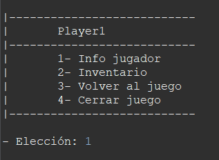
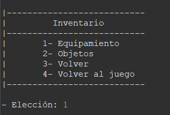
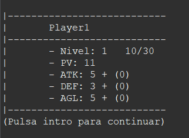
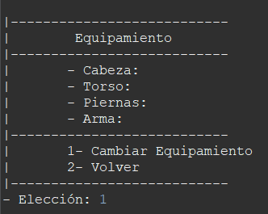
Mejora visual y optimización
Pequeño cambio en la forma de mostrar los mapas, eliminación de funciones obsoletas.
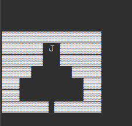
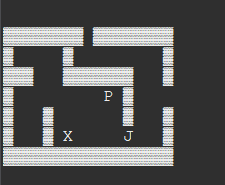
Inicio del desarrollo Gráfico
Ante las limitaciones que tiene el hacer este proyecto en la consola de texto, se tomó la decisión de migrar el proyecto a una interfaz gráfica. Fue tedioso alterar toda la estructura del programa para que funcionase con JavaFX, no obstante, para esta versión ya estaba reconstruida la base para empezar a crear todas las pantallas que mostrasen todos los sistemas que tenía el proyecto.
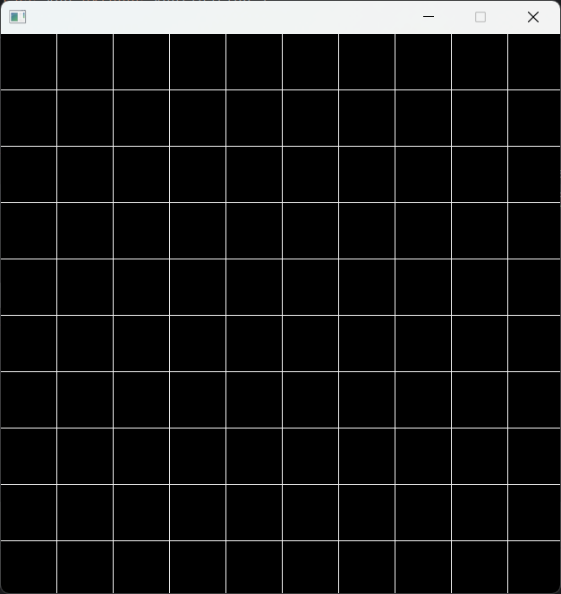
Prototipo Visual
Avance del desarrollo gráfico, se hace uso de sprites sencillos a modo de prototipos para comprobar el funcionamiento. En esta versión se dibujan todas las "cosas" del juego. La movilidad funciona visualmente.
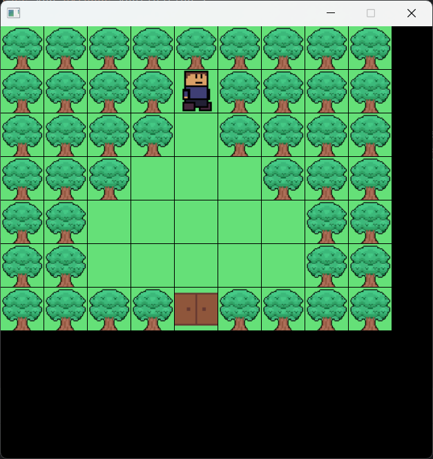
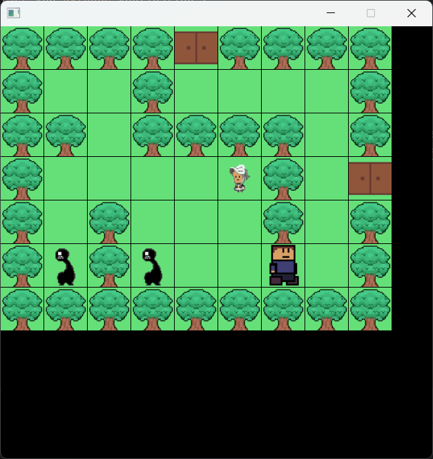
Interfaz de Batalla
Implementación de la interfaz de la batalla, hubo problemas para que se iniciase correctamente (en la parte gráfica) pero fue solucionado. En la versión actual solo funciona el botón para atacar, no obstante la batalla es completamente funcional.
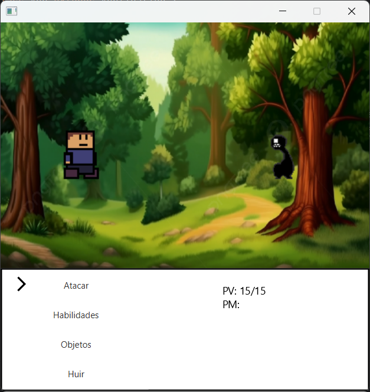
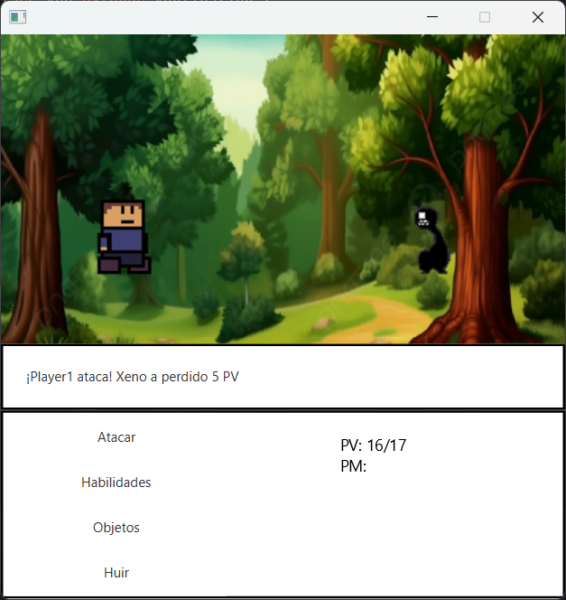
Diálogos Visuales
Integración del sistema de diálogos en la nueva interfaz gráfica para interactuar con los NPCs directamente en el mapa visual.
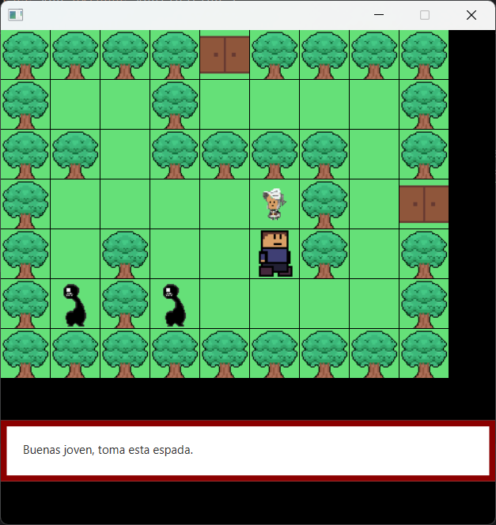